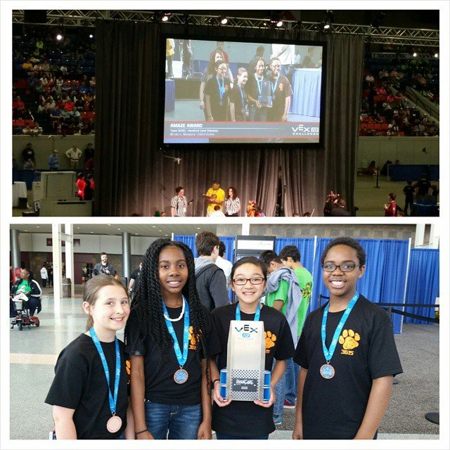
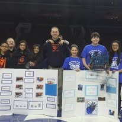
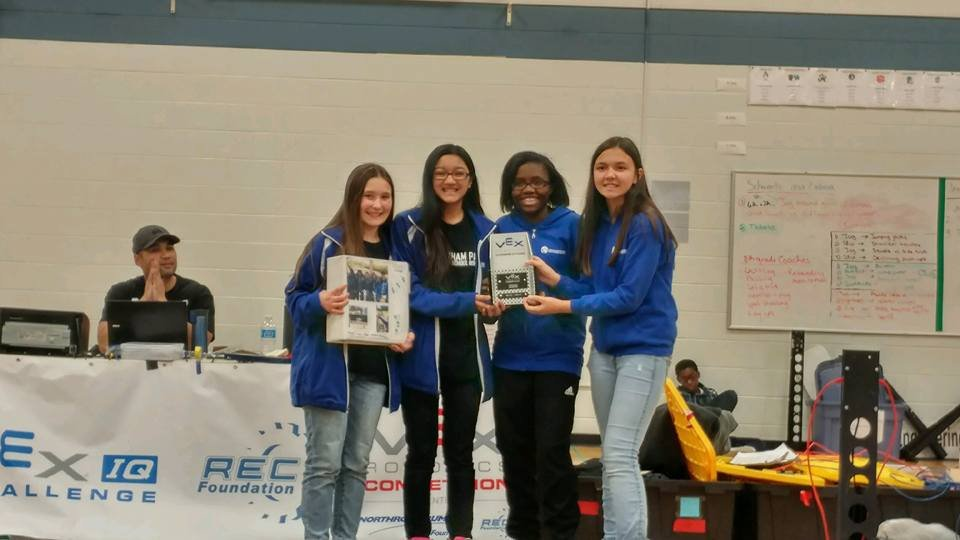
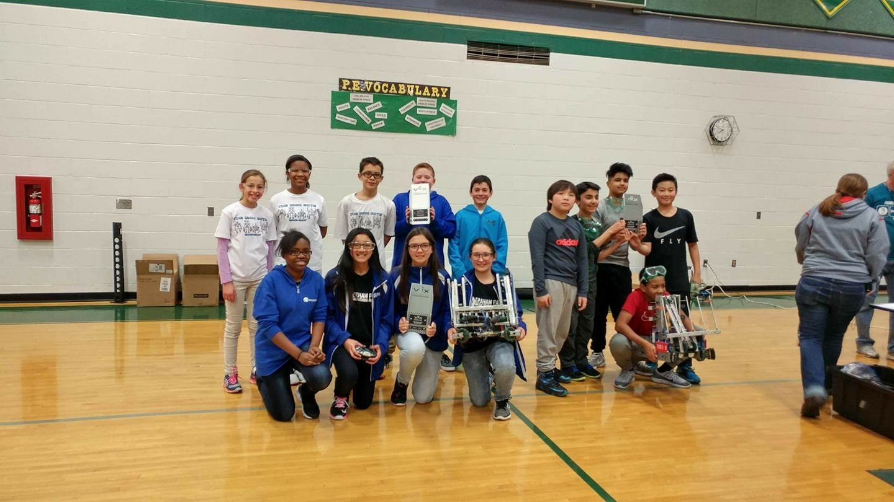

Robotics Timeline
VEX IQ Elementary Division, Triangle Elementary School
August 2014 – May 2015- Qualification Match from the VEX IQ World Championship
- VEX IQ World Championship — Amaze Award

From August 2014 to May 2015, I was part of the VEX IQ robotics club at Triangle Elementary School. Joining the team opened my eyes to the worlds of programming and engineering. We did a research project on mechanical advantage, and it showed me that I really liked STEM. I worked super hard that first year, and it paid off. My team made it all the way to the VEX IQ World Championship, where we earned the Amaze Award. This experience is what inspired me to pursue a Computer Science degree in college.
VEX IQ Middle Division, Graham Park Middle School
May 2015 – May 2016- Qualification Match from the VEX IQ World Championship
- VEX IQ World Championship
- Robot and Research Project from the Philadelphia Specialty Event

My passion for robotics and engineering continued into middle school. I joined the VEX IQ robotics team at Graham Park Middle School from May 2015 to May 2016. This experience gave me the opportunity to focus even more on engineering design and problem-solving. I made it to the VEX IQ World Championship for the second year in a row! Being part of this team helped me grow and convinced me to continue robotics.
VRC Middle Division, Graham Park Middle School
May 2016 – May 2017- Design Award — Best Engineering Notebook

- Teamwork Champion Award — Highest Scoring Finals Match

From May 2016 to May 2017, I moved up again by joining the VEX Robotics Competition team at Graham Park Middle School. In VEX there were metal parts instead of plastic ones, and that meant everything was more complex. The learning curve was definitely steep, but my team and I still put everything we had into designing, testing, and documenting every step of our process. In the end, we created a competitive robot and an engineering notebook that showed our growth and teamwork. This year I really grew as an engineer and as a person.
VRC High Division, Enginotic 6 Robotics
May 2017 – May 2019- Qualification Match from the VEX World Championship
- Enginotic 6 Intro Video
- Expansion
- Double Catapult
- VEX World Championship — two years in a row
From May 2017 to May 2019, I joined the VRC High School Division of robotics with a team I helped create, Enginotic 6 Robotics. Our high school couldn’t provide enough support for the robotics club, so me and five of my friends (and our parents) decided to take matters into our own hands. We created a private team out of my basement, formed our own LLC, and started fundraising for our “basement robotics program.” It was a huge step up in both competition level and responsibility, but our hard work paid off. We made it to the VEX World Championship for two years in a row! The program grew beyond the original six of us and still exists today. It was really cool to be a part of something like this.